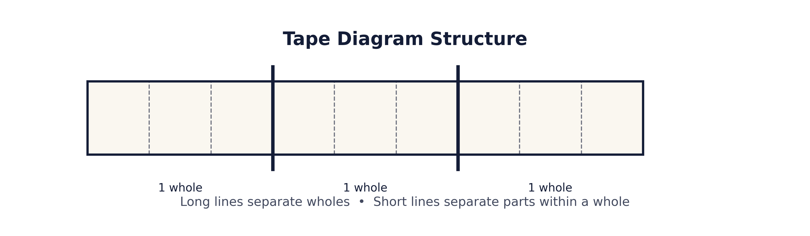
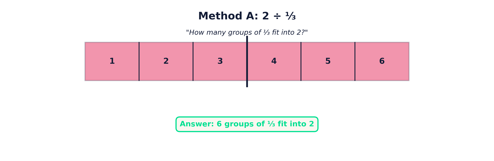
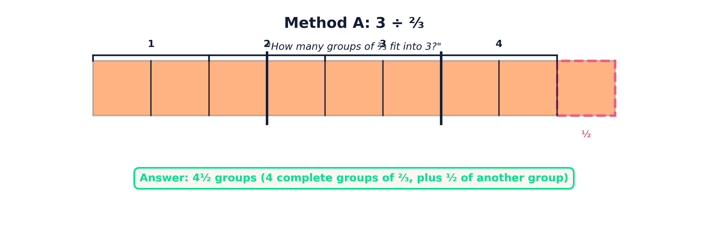
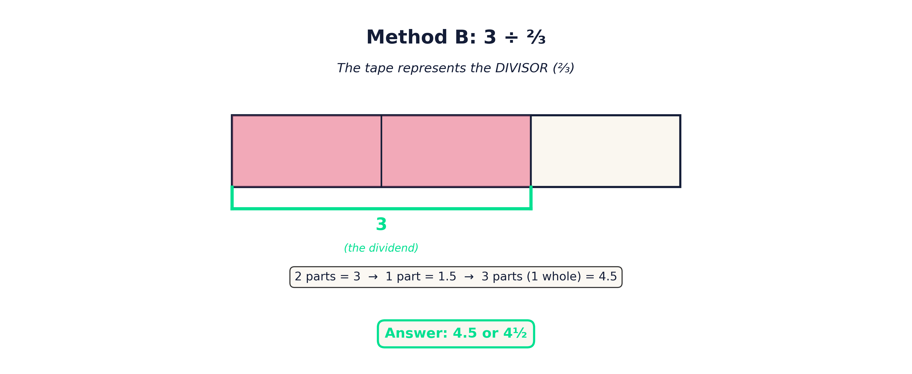
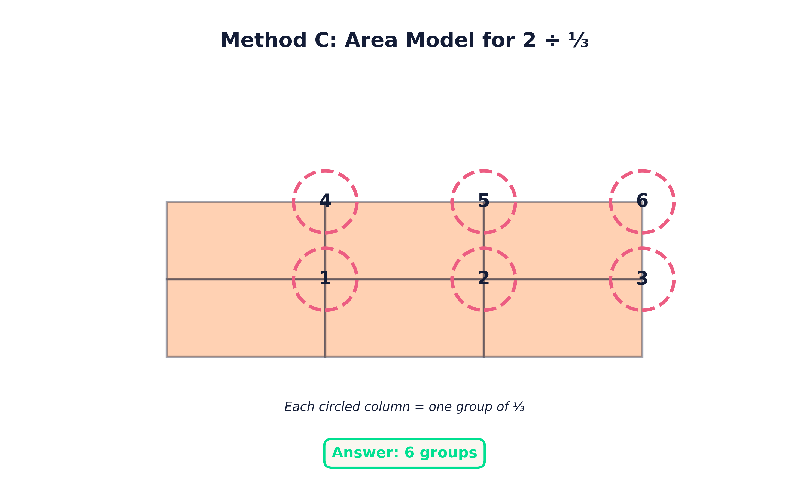

Why Tape Diagrams Are a Game-Changer for Dividing Fractions
If you've ever taught dividing fractions, you've probably noticed a familiar pattern. Students can memorize the algorithm, but they don't really understand what's happening. They can "keep, change, flip," but when the numbers change, or when a word problem is involved, everything falls apart.
The issue isn't effort or intelligence. It's that dividing fractions is abstract, and many students are asked to perform the procedure before they understand the meaning. Tape diagrams help bridge that gap.
Tape diagrams give students a way to see fraction division. They slow the math down just enough to make sense of it, without watering down the thinking. More importantly, they help students answer the core question behind every division problem:
How many groups of this are inside that?
What Is a Tape Diagram?
A tape diagram is a visual model made of one or more long rectangles (or "tapes") that represent quantities. Long vertical lines extending beyond the tape separate wholes. Lines drawn inside the tape separate parts of a whole.
When dividing fractions, tape diagrams allow students to represent both the dividend and the divisor in a structured, consistent way. Instead of guessing what the numbers mean, students can build a model that reflects the situation and reason their way to an answer.
Tape diagrams are especially powerful because they work for whole numbers, fractions, and mixed numbers—and they naturally connect to real-world contexts like distance, time, food, and money.
Why Tape Diagrams Work So Well for Fraction Division
Dividing fractions often produces answers that feel surprising to students. Why does dividing by a fraction sometimes make the result larger? Why does dividing by a number less than one increase the quotient?
Tape diagrams make these ideas visible.
When students build a tape diagram, they can literally see that if each group is small, more groups will fit inside the same amount. Instead of being told this as a rule, students discover it through the model. This visual reasoning gives them something to fall back on when the algorithm alone isn't enough.
Three Ways to Use Tape Diagrams for Dividing Fractions
Over time, I've found that there are three main methods students can use when dividing fractions with tape diagrams. In some situations, one method might feel more intuitive than another. However, I believe that Method A is the most consistently reliable for students, which is why I usually teach it first.
Method A: Make a Tape to Represent the Dividend
In Method A, the tape represents the dividend, or the total amount being divided.
To begin, students draw a long tape that is long enough to fit the dividend. If the dividend is a fraction or mixed number, the tape is rounded up to the next whole number so there is enough space to work. Long vertical lines are used to separate each whole.
Next, each whole is divided into equal parts based on the least common denominator of the dividend and divisor. These smaller parts are important because each piece represents a fraction of a whole—not one whole unit.
Students then shade the tape to match the value of the dividend. This step is critical. It ensures the model actually represents the quantity being divided, rather than an abstract number.
Finally, students count by steps of the divisor. Each complete step represents one full group. If there is an incomplete step at the end, students count the shaded parts out of the number needed for a full step and add that fraction to their whole groups.
This method directly answers the question: How many groups of the divisor are inside the dividend?
Method B: Make a Tape to Represent the Divisor
Method B shifts the focus and often feels less intuitive at first, but it can be very powerful once students understand it.
Here, the tape represents the divisor, not the dividend. Students begin by drawing a tape that fits the divisor, rounding up to the nearest whole if needed. Each whole is divided into equal parts based on the denominator of the divisor.
Students then shade the tape to represent the divisor itself. At this point, the shaded parts represent one group of the divisor.
Next, a bracket is drawn underneath just the shaded parts, and that bracket is labeled with the value of the dividend. This tells students that the shaded parts together are worth the total amount being divided.
From there, students find the value of one part by dividing the dividend by the number of shaded parts. Once the value of one part is known, the value of one whole can be determined by combining all of its parts.
This method helps students think carefully about scaling and unit size, and it connects well to problems involving rates and unit prices.
Method C: Area Model
Method C uses an area model, which is especially helpful for visual and spatial learners.
Students begin by drawing a rectangle that can be divided both vertically and horizontally. One direction is divided to represent the number of wholes in the dividend (rounded up if necessary). The other direction is divided to match the denominator of the divisor.
Students then shade the rectangle to match the dividend. Once the shading is complete, they circle groups of parts that match the divisor. Each complete circle represents one whole group.
If there are leftover shaded parts that don't form a complete group, students count how many shaded pieces they have out of the number needed for a full group and express that as a fraction.
This method reinforces the idea that division is about grouping and can help students connect fraction division to multiplication and area.
Supporting Students Without Overwhelming Them
One important thing to keep in mind is that alternative strategies can sometimes help students—and sometimes they can create confusion. That's why I recommend starting with one consistent method, allowing students to build confidence, and then introducing other methods as optional tools.
Tape diagrams aren't about doing more work. They're about doing work that actually makes sense.
Want a Full Instructional Guide?
If you're looking for step-by-step teacher directions, guided examples, student practice pages, and word problems that are designed to build understanding—not just fluency—I've created a complete instructional guide for dividing fractions with tape diagrams.
Get Access via NewsletterI regularly share classroom-tested resources, teaching strategies, and ready-to-use materials to help students truly understand math.
If dividing fractions has ever felt frustrating to teach, tape diagrams can change that—and I'd love to help you get started.